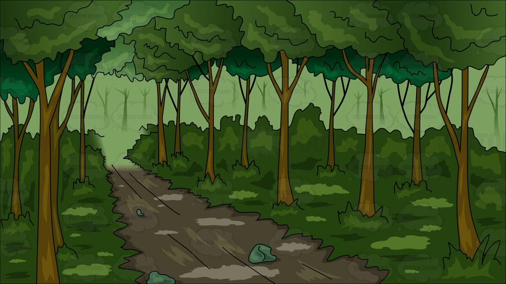

A man came into a Wood one day with an axe in his hand, and begged all the Trees to give him a small branch which he wanted for a particular purpose. The Trees were good-natured and gave him one of their branches. What did the man do but fix it into the axe head, and soon set to work cutting down tree after tree. Then the trees saw how foolish they had been in giving their enemy the means of destroying themselves. 